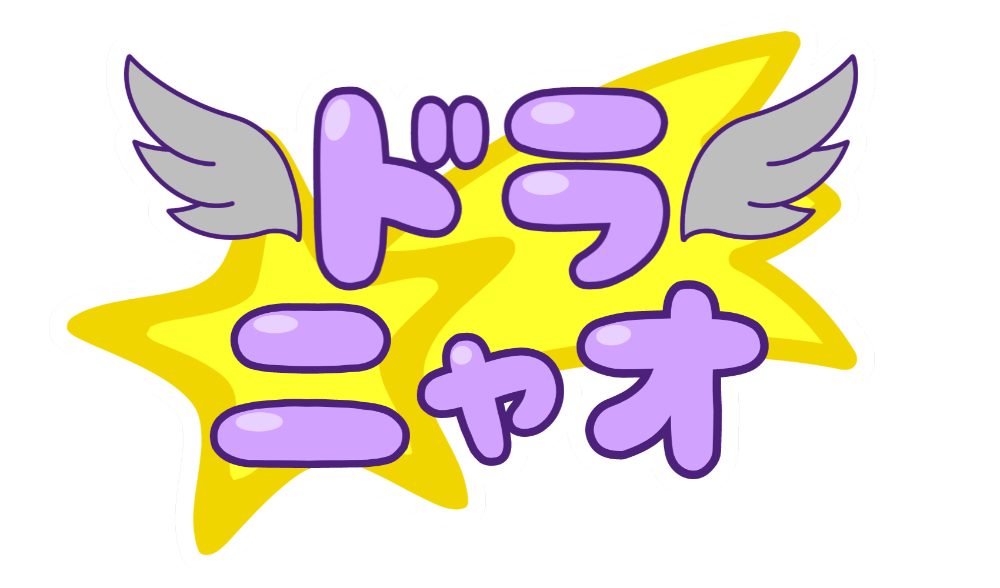
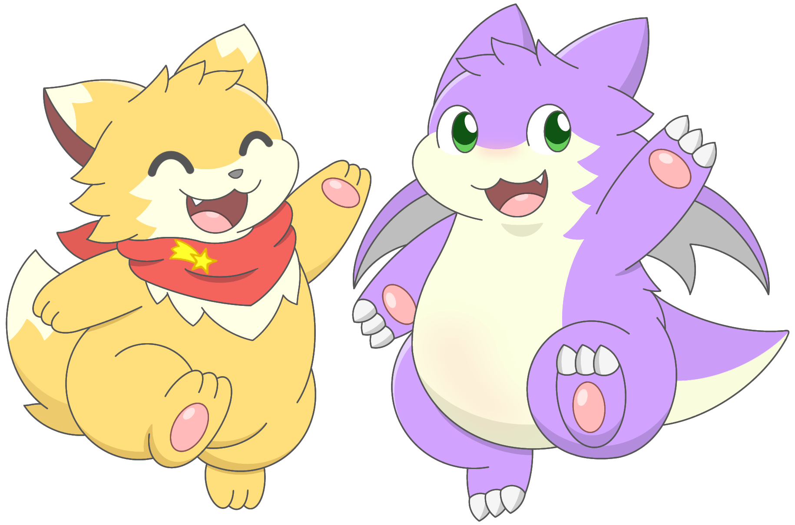
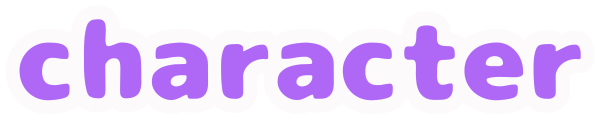
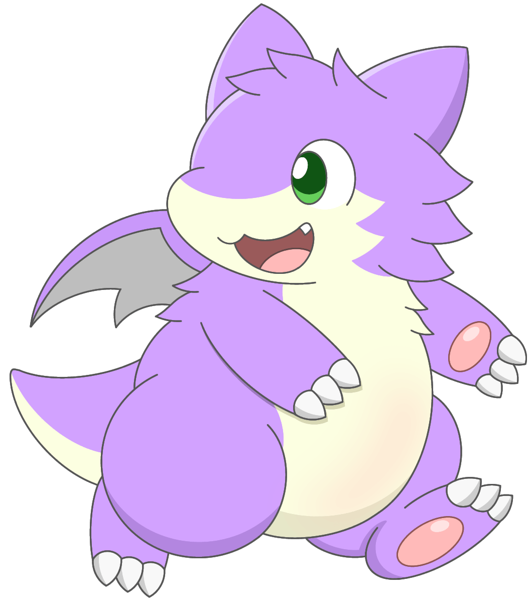
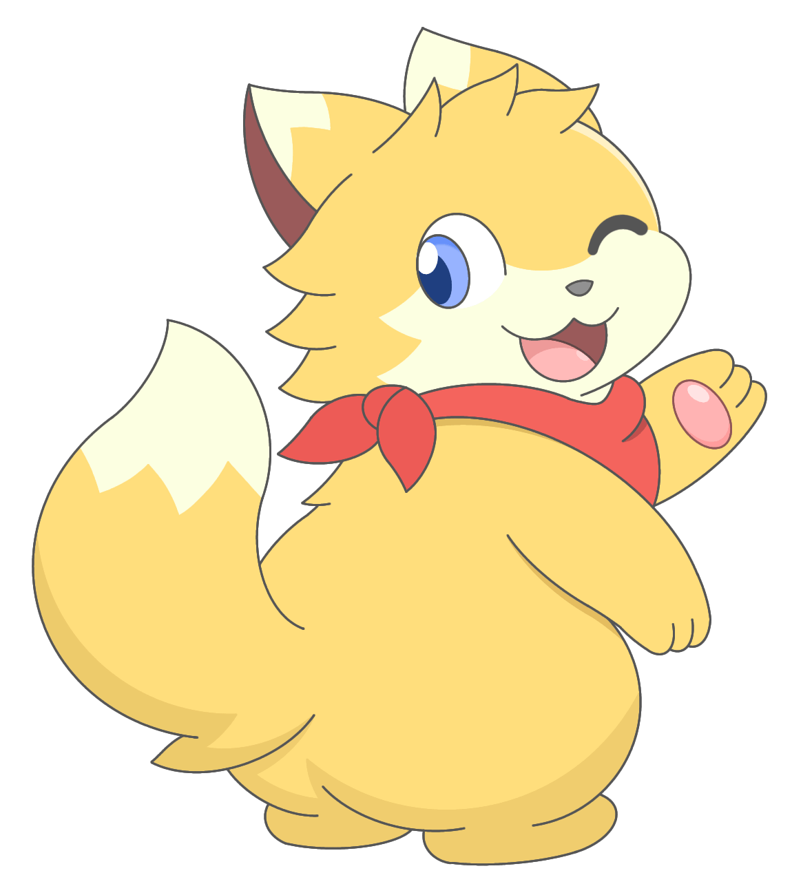
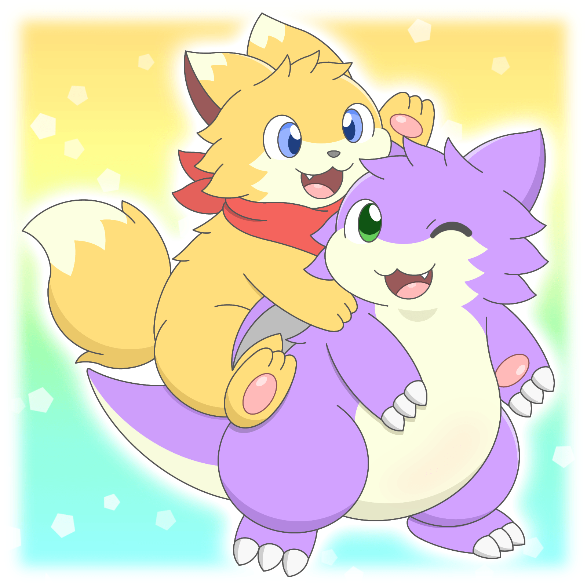
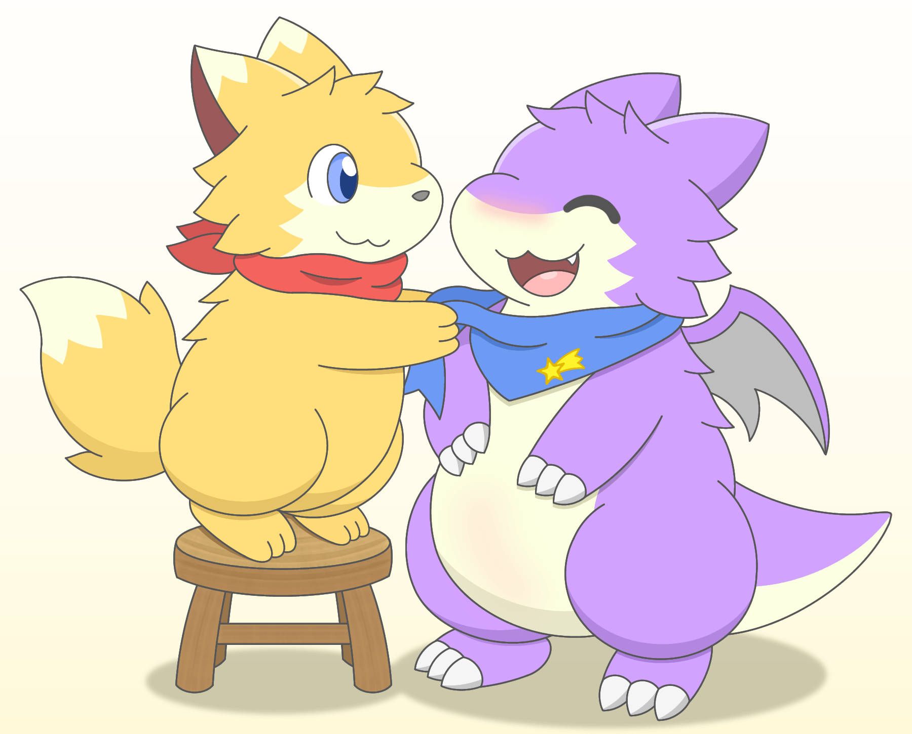
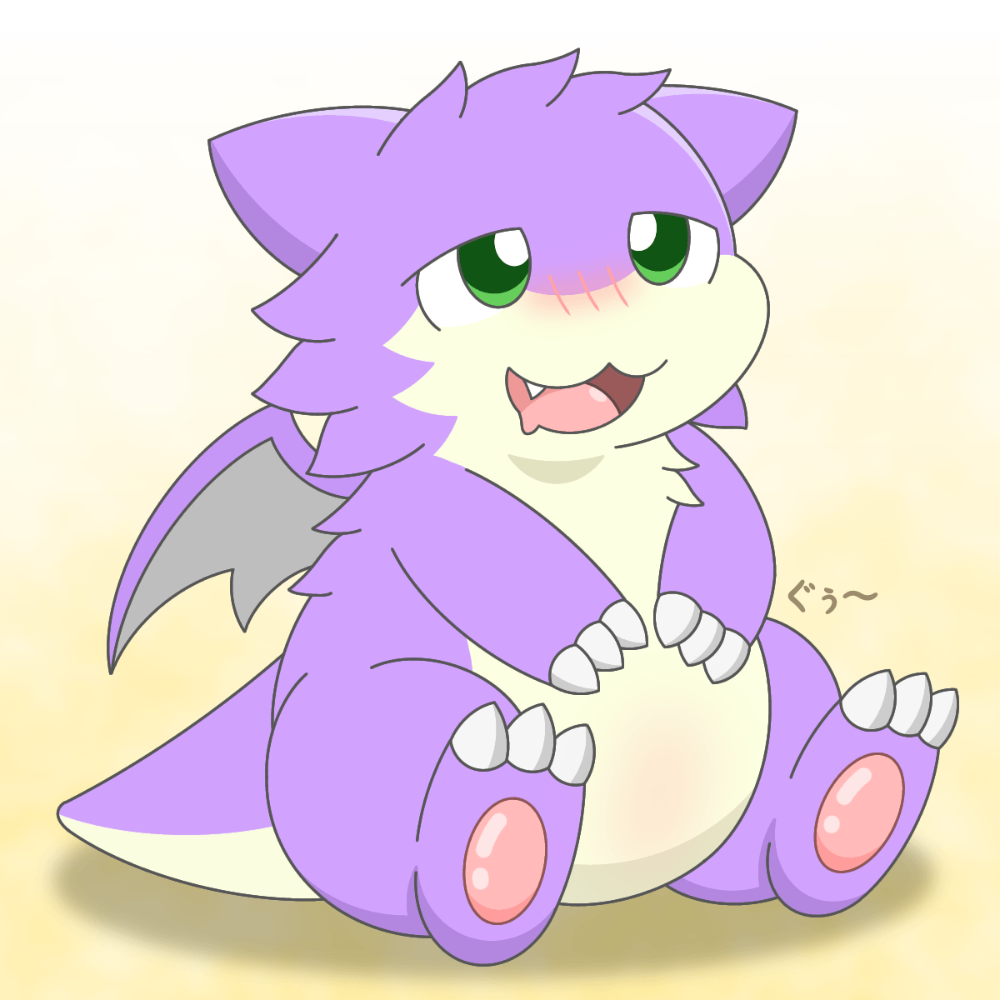
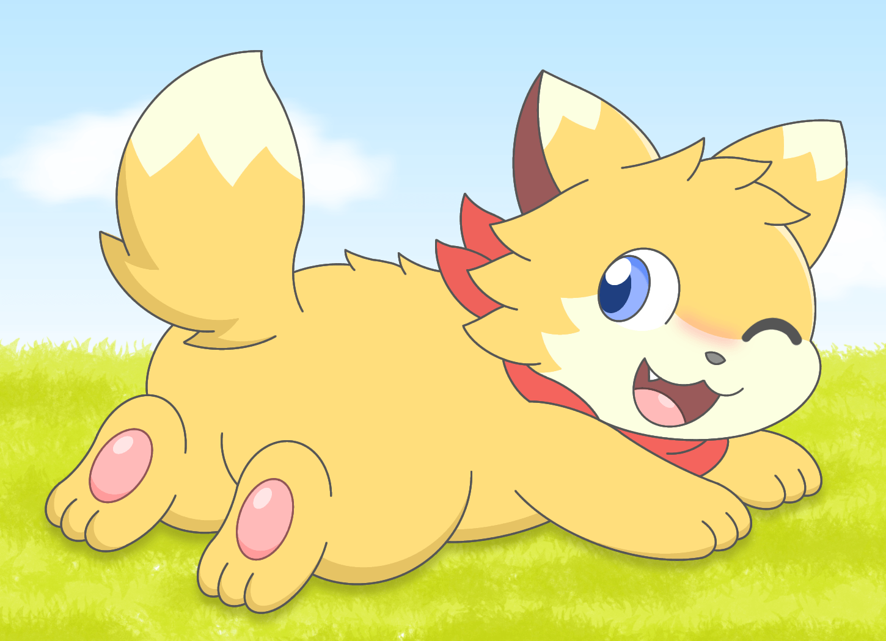

X（旧Twitter）を中心に創作活動をしているドラニャオです！
創作キャラクターたちの魅力をたくさんの方に知っていただくために、紹介サイトを制作しました。
このページでは、ドラニャオのメインキャラクターである「アロン」と「コハク」について紹介します✨
ぜひ楽しんでいってください！


性別オス

性別オス
4枚のイラストをピックアップして掲載しています！
イラストは随時更新する予定です。
※イラストの無断使用は禁止します。

アロンくんの背中に乗っかって、仲良くしている姿です！

コハクくんみたいに自分もスカーフを付けてみたくなったアロンくん。
青いスカーフを身に着けてもらってます。

お腹が減ってご飯のことを想像してるアロンくん。
一緒にご飯食べようね！

かまって欲しそうに後ろを振り返るコハクくん。しっぽをフリフリしてる姿が可愛らしい！
たくさんなでてあげると喜びます！